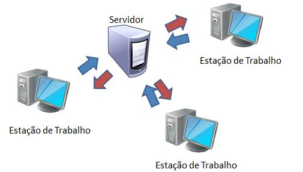

Um sistema de controle de versão (como o próprio nome já diz) tem a finalidade de gerenciar diferentes versões de um documento. Com isso ele te oferece uma maneira muito mais inteligente e eficaz de organizar seu projeto, pois é possível acompanhar um histórico de desenvolvimento, desenvolver paralelamente e ainda te oferecer outras vantagens, como exemplo, customizar uma versão, incluir outros requisitos, finalidades especificas, layout e afins sem mexer no projeto principal ou resgatar o sistema em um ponto que estava estável, isso tudo sem mexer na versão principal. Um Iniciante da área de desenvolvimento de software ao se deparar com seu primeiro projeto de maior porte com uma equipe de desenvolvimento, geralmente, não conhece as ferramentas usadas para trabalhar paralelamente de forma eficiente e acaba sempre com aquela terrível dúvida: Como iremos desenvolver o projeto em paralelo? Existe a possibilidade de fazer isso sem que haja sobreposição das minhas alterações ou alguém esteja utilizando a versão errada? Como iremos resolver esse problema sem apelar para a nossa linda, muitas vezes útil, gambiarra? É ai que surge a solução: usar um sistema de controle de versão! Ótimo... Mas o que é um sistema de controle de versão? Como ele funciona?
Basicamente, os arquivos do projeto ficam armazenados em um repositório (um servidor em outras palavras) e o histórico de suas versões é salvo nele. Os desenvolvedores podem acessar e resgatar a ultima versão disponível e fazer uma cópia local, na qual poderão trabalhar em cima dela e continuar o processo de desenvolvimento. A cada alteração feita, é possível enviar novamente ao servidor e atualizar a sua versão a partir outras feitas pelos demais desenvolvedores.
E se por acaso os desenvolvedores estiverem editando o mesmo arquivo? O que irá acontecer se enviarem ao mesmo tempo para o servidor? Para evitar problemas como esse, o Sistema de Controle de Versão oferece ferramentas uteis para mesclar o código e evitar conflitos.
Por exemplo: Você atualizou seu projeto (usando uma função chamada de check-out ou update) e começou a fazer suas alterações. Ao mesmo tempo, outro desenvolvedor fez alterações e atualizou a versão no servidor. Quando for enviar sua versão (usando uma função chamada de check-in ou commit) o Sistema de Controle de Versão irá alertar que o seu arquivo está desatualizado. Ele enviará as novas informações adicionadas e permitirá mesclar as diferentes versões. Não apenas isso, ele também mostrará onde foram feitas atualizações, trechos de código incluídos ou removidos e casos de conflito, onde linhas podem se sobrescrever e oferecerá opções para mesclar manualmente, escolhendo a melhor solução. Atualmente, os sistemas de controle de versão são classificados em dois tipos: Centralizados e distribuídos. O centralizado trabalha apenas com um servidor central e diversas áreas de trabalho, baseados na arquitetura cliente-servidor. Por ser centralizado, as áreas de trabalho precisam primeiro passar pelo servidor para poderem comunicar-se. Essa versão atende muito bem a maioria das equipes de desenvolvimento que não sejam enormes e trabalhem em uma rede local, além de não ter problemas de velocidade para enviar e receber os dados e ter um bom tempo de resposta do servidor. Um dos principais sistemas com o tipo de controle de versão centralizado é o Subversion. O distribuído vai mais além. Ele é recomendado para equipes com muitos desenvolvedores e que se encontram em diferentes filiais. Esta versão funciona da seguinte maneira: cada área de trabalho tem seu próprio “servidor”, ou seja, as operações de check-in e check-out são feitas na própria máquina. Porém diferentemente do centralizado, as áreas de trabalho podem comunicar-se entre si, recomenda-se usar um servidor como centro do envio dos arquivos para centralizar o fluxo e evitar ramificações do projeto e a perda do controle sobre o mesmo, geralmente o sistema te da essa opção, oferecendo um servidor remoto para hospedar o projeto. A comunicação entre o servidor principal e as áreas de trabalho funciona com outras duas operações, para atualizar e mesclar o projeto, chamadas de pull e push (puxar e empurrar).
pull: Com esta operação é possível pegar a versão de outra área de trabalho e mesclar com a sua.
push: Com esta operação temos o processo inverso do pull, ou seja, enviando para outra área a sua versão do projeto.
Por ser na própria máquina, o sistema de controle distribuído acaba sendo mais rápido, porém exige maior conhecimento da ferramenta e de inicio podem atrapalhar o desenvolvedor. Como exemplo, o sistema de mesclagem em edições concorrentes, se torna diferente por trabalhar em um sistema de arquivos binários (sequenciais de bits compostos por zero e um) que em determinadas situações não permite a comparação entre atualizações concorrentes. O sistema centralizado trabalha com arquivos de texto, que permite a comparação em atualizações concorrentes e da opção ao desenvolvedor para escolher a melhor solução. Portanto, por esse tratamento de mesclagem ser diferente, podem ocorrer situações onde o trabalho de alguém possa ser sobreposto e gerando tormento para os desenvolvedores. Para isso existe uma função chamada lock, que bloqueia o arquivo para que não seja modificado por outros enquanto estiver com você. Os sistemas distribuídos mais conhecidos são o Git e o Mercurial. A maioria das aplicações para desenvolvimento de software contam com plug-ins para o uso dos , como o NetBeans, Eclipse, Delphi XE2 e o Visual Studio. O Sistema de Controle de Versão é uma ótima ferramenta para o desenvolvimento do seu projeto e com certeza, deve ser usada e bem aproveitada para o bem do mesmo.
Por Eduardo Em 2012
Link: https://www.devmedia.com.br/sistemas-de-controle-de-versao/24574